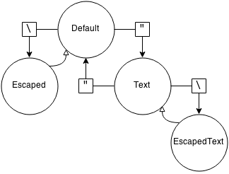
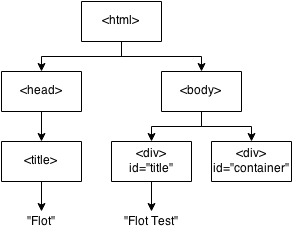

HTML Parsing
Parsing HTML documents in generally considered to be a very hard exercise1234. However, with the introduction of the HTML5 standard the parsing process has been normalised. The World Wide Web Consortium (hereafter abbreviated as W3C) devoted about 140 pages to HTML parsing alone. These pages contain a full specification of the parsing process and include guidelines on how to handle syntactical errors in HTML documents. In this chapter we will attempt to describe the various stages of HTML parsing.
Simple command parser
Before going more in-depth about HTML parsing we will look at a very simple command parser to get more comfortable with the basic parsing concepts. The goal is to parse a command with arguments in the following form: command argument1, argument2, argumentN The space between the command and the arguments is mandatory, but the space between the comma and the arguments is optional. Spaces inside of the arguments have to be ignored, unless escaped or inside quotes. Same goes for the comma: repeat "Sorry soldier, shoes sold in pairs.",3 repeat Sorry\ soldier\,\ shoes\ sold\ in\ pairs., 3 The commands above are equivalent, but the first one is far more readable for humans, which is the reason quotes are introduced in the syntax. Since we use quotes for strings and backslashes for escaping characters, they can both be created by escaping them: print "\"When in doubt, use brute force.\" - Ken Thompson" count string1, \\ Since spaces are ignored in arguments, the following commands are equivalent: concat I like piz za , a lot concat Ilikepizza,alot The parser for this simple example will output an array of strings, where the first string is the command and the strings after that are the command arguments. When a backslash is followed by a non-escapable character (anything but the quote and the backslash), the backslash is ignored. This makes the following commands equivalent: add \$va\ria\b\le,4 add $variable,4
The parsing
The simple command parser (actually a tokenizer) will use a parsing state to determine what to do with a certain character is encountered. The parsing state has the one of the following values: 
- Default
- Escaped
- Text
- TextEscaped
The parser has the following variables:
- The parsing state, initially set to "Default";
- A temporary buffer, initially empty;
- A list of tokens, initially empty.
The parser will start iterating over the characters in the input stream and when syntactical characters (spaces, quotes, backslashes or commas) are encountered, the parsing state and/or one of the variables will be updated accordingly. The parser works like this:
- When the parsing state equals to "Default":
- When a space (command separator) is encountered and the list of tokens is empty (the end of the command text is reached), the (non-empty) temporary buffer is added to the list of tokens and then cleared;
- When a comma (argument separator) is encountered, the temporary buffer is added to the list of tokens and then cleared;
- When a backslash (escape character) is encountered, the parsing state is changed to "Escaped";
- When a quote (text escape block) is encountered, the parsing state is changed to "Text";
- Otherwise the current character is appended to the temporary buffer.
- When the parsing state equals to "Escaped":
- The current character is added to the temporary buffer and the parsing state is changed to "Default".
- When the parsing state equals to "Text":
- When a backslash (escape character) is encountered, the parsing state is changed to "TextEscaped";
- When a quote (text escape block) is encountered, the temporary buffer is added to the list of tokens and then cleared. After that the parsing state is changed to "Default";
- Otherwise the current character is appended to the temporary buffer.
- When the parsing state equals to "TextEscaped":
- The current character is appended to the temporary buffer and the parsing state is changed to "Text".
When the iteration over all characters is done and the temporary buffer is not empty, the temporary buffer will be added to the list of tokens and then cleared.
From this simple command parser example, you hopefully saw that writing a parser requires a methodic approach and will get more and more complex when more features are added to the language that is parsed. The C# code we created as a result of this simple command parser is available on our GitHub.
HTML Encoding
Parsing HTML all starts with getting the HTML document from a byte stream (usually a network or a local filesystem). Once all bytes are retrieved from the stream, the parser needs to figure out which character encoding was used. To determine the character encoding, a parser can use an encoding sniffing algorithm defined by W3C. Once the encoding of the input byte stream has been determined, a character stream is created. This character stream consists of characters (unicode code points) and is created by decoding the byte stream using the determined encoding. The character stream is preprocessed, removing certain characters and throwing errors when invalid characters are part of the stream.
HTML Tree construction
Just like the simple command parser example above, HTML uses a state machine for parsing. The exact behaviour of each state can be found here. However, since HTML must be represented as a DOM tree, there is an additional step after the tokenization which is called Tree construction. The tree construction stage starts with an array of tokens from the HTML tokenization stage. The tree constructor has an insertion mode, which has states like "Initial", "Before HTML", "Before Head", etc. Depending on which token was encountered and which insertion mode is set. When a tree is constructed it might look something like this:

Simple tree constructor
Because parentheses can be nested, a stack will be used so the tree constructor knows which element it should add children to. As an example we want construct the tree of the following expression: ((2-x)/(x+5))*(x+7) The tree of the expression above looks like this:
The circle nodes in the tree indicate a new group of parentheses. The upper node is called the root and has no functionality apart from being able to have multiple nodes on the same level, the same goes for HTML. Constructing the tree from an expression like mentioned above would go as follows (the last-pushed node on the element stack is hereafter referred to as the top):
- Push the root element to the element stack;
- Initialize an uninitialized temporary child node;
- Iterate over every character in the input stream and do one of the following:
- When the current character equals to an opening parentheses:
- Check if the temporary child node has contents. If so, add it to the children of the top node on the stack and destroy it;
- Initialize a new node and add it as a child to the top node on the stack.
- When the current character equals to an opening parentheses:
- Check if the temporary child node has contents. If so, add it to the children of the top node on the stack and destroy it;
- Pop the top node off the stack and check if it equals to the root node. If so, return a parsing error.
- Otherwise initialize the temporary child node and append the current character to it’s contents.
- When the current character equals to an opening parentheses:
- Pop the top node (if there were no incorrectly nested nodes this should be the root) and check if the temporary child node has contents. If so, add the it to the children of the popped node and destroy the temporary child node.
DOM
W3C says the following about the Document Object Model:
"The Document Object Model is a platform- and language-neutral interface that will allow programs and scripts to dynamically access and update the content, structure and style of documents. The document can be further processed and the results of that processing can be incorporated back into the presented page. This is an overview of DOM-related materials here at W3C and around the web."
Because of the dynamic design, it is not possible to completely separate the tokenization and the tree building. Scripts could manipulate the DOM, which would in it’s turn trigger parsing and tree building. The following image (taken from here) illustrates this very well: